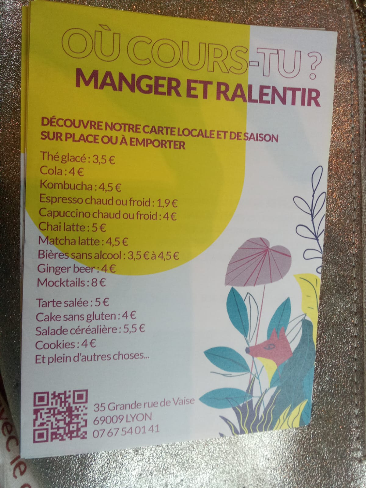
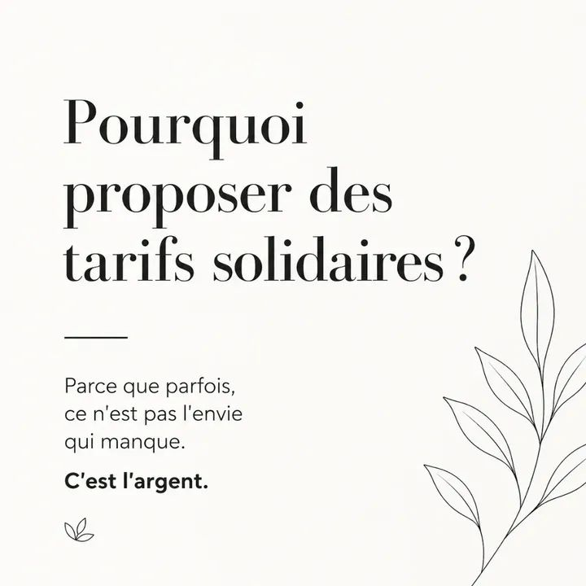
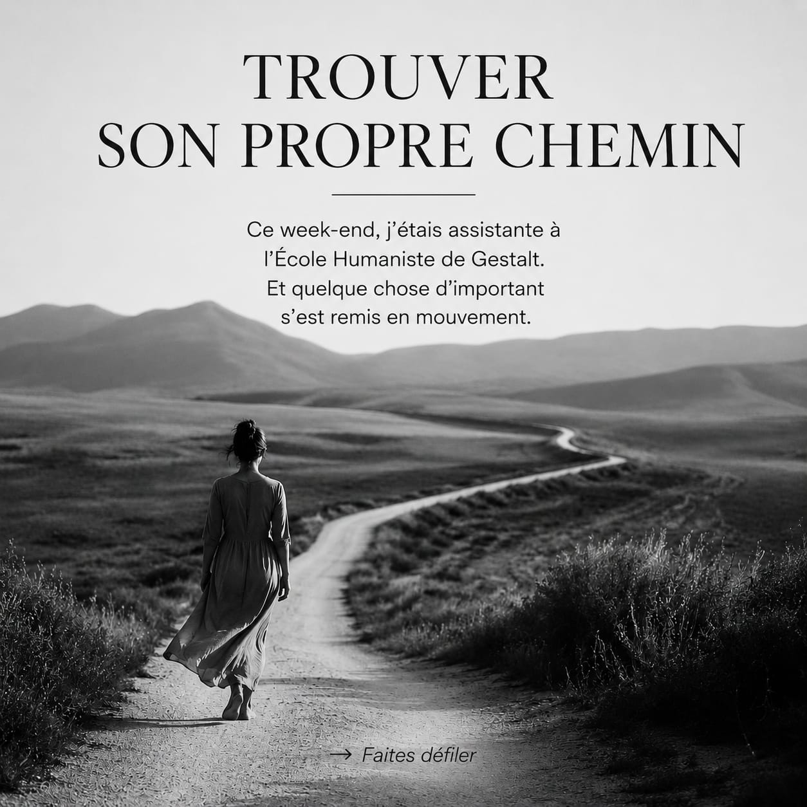
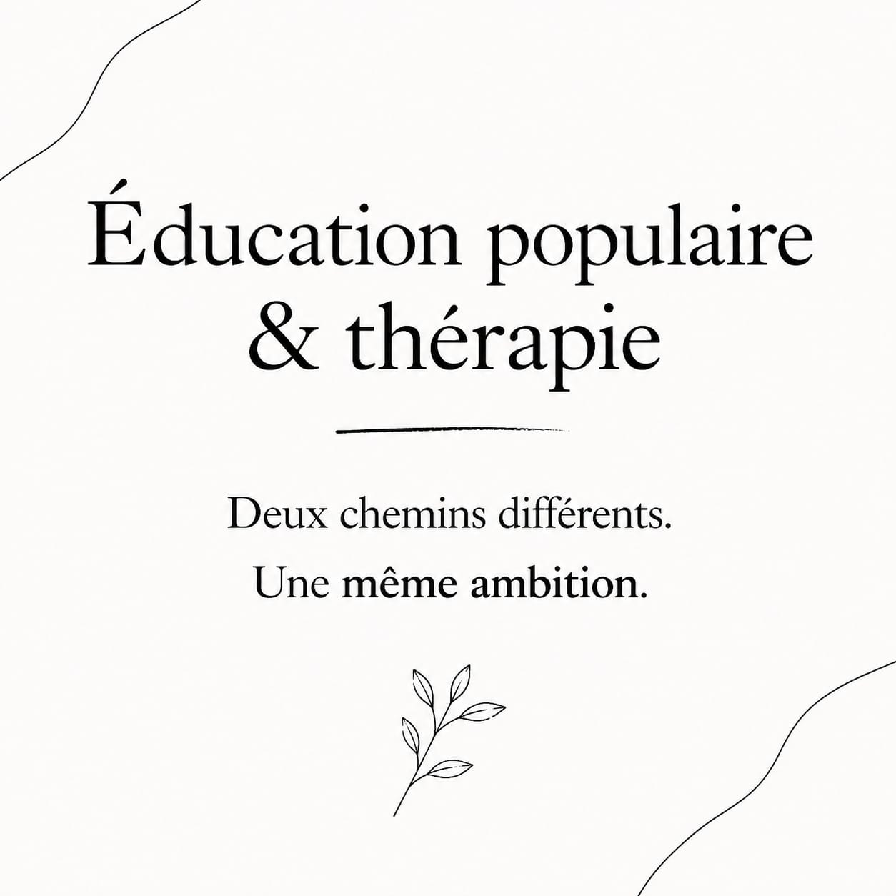

Juin 2026 : une transition en douceur
Bonjour à toutes et à tous,
Le mois de juin marque souvent la fin de quelque chose.
Une année scolaire. Une saison. Un projet. Parfois même une manière d’habiter sa vie.
Et je crois que cette année, je me sens particulièrement traversée par cette énergie de transition.
Une nouvelle étape professionnelle
Depuis maintenant trois ans, je vous accueille à Francheville.
J’y ai vu naître cette activité. J’y ai rencontré nombre d’entre vous. J’y ai accompagné des moments de doute, des séparations, des reconstructions, des élans de vie et de nombreux changements.
Aujourd’hui, une nouvelle étape commence.
Je rejoins progressivement Où cours-tu ?, un tiers-lieu situé au cœur de Lyon, à quelques minutes du métro Valmy.
Pourquoi ce choix ?
Parce que ce lieu me ressemble.
Parce qu’il me permet de rassembler dans un même espace les différentes facettes de mon activité :
- la thérapie individuelle,
- la thérapie de couple,
- les ateliers collectifs,
- les cafés psycho,
- les projets d’éducation populaire et de médiation.
Mais aussi parce qu’il incarne des valeurs qui me sont chères : le lien, l’accueil, la rencontre, la créativité et l’attention au vivant.
Une transition en douceur
Si ce changement de cabinet vous semble compliqué, rassurez-vous.
Je continuerai encore quelque temps à recevoir à Francheville.
Nous pourrons en parler ensemble lors de notre prochaine séance afin de trouver la formule qui vous convient le mieux.
Le suivi pourra également se poursuivre :
- en présentiel à Valmy,
- en visioconférence,
- ou sous une forme mixte alternant les deux.
L’essentiel est que chacun puisse trouver un cadre adapté à sa situation et à ses besoins.
Je fais néanmoins un petit pari.
Je crois qu’une fois installé·e dans le canapé de Valmy, après avoir découvert le lieu, rencontré les personnes qui l’habitent ou goûté les délicieux cookies du coffee shop, vous aurez peut-être envie d’y revenir.
En tout cas… c’est exactement ce qui m’est arrivé.
Une transition aussi plus personnelle
Cette évolution professionnelle résonne également avec un changement plus intime.
Dans quelques mois, ma fille aînée prendra son envol vers une nouvelle aventure étudiante et une vie en colocation après son année à Glasgow.
Une nouvelle étape pour elle. Une nouvelle étape pour moi.
Je réalise que plusieurs cycles arrivent doucement à leur terme.
Et plutôt que de m’y accrocher, j’ai envie de les remercier. De leur laisser la place de se transformer. Pour accueillir ce qui vient.
Portes ouvertes chez Où cours-tu ?
Vendredi 19 juin
À partir de 19h00
Au programme : visite des espaces, rencontre avec les thérapeutes et praticiens du lieu, découverte du coffee shop, échanges informels dans une ambiance conviviale.
Où cours-tu ?
35 Grande Rue de Vaise – Lyon 9
Métro D Valmy à 3 minutes à pied.
Que vous soyez déjà accompagné·e ou simplement curieux·se de découvrir cet espace, vous êtes les bienvenu·es.
Le dernier Café Psycho de la saison change de lieu… et de date !
Le Café Psycho initialement prévu le 16 juin est reporté au :
Vendredi 3 juillet
18h30
Chez Où cours-tu ?
Thème : Les différents âges de la vie adulte
Une soirée pour explorer les grandes étapes, les transitions, les remises en question et les ressources qui jalonnent nos parcours.
Cette rencontre est offerte à toutes les personnes ayant déjà participé au moins une fois à un Café Psycho cette saison.
Pour les autres personnes, la participation reste libre et consciente.
Vous pourrez également profiter du coffee shop sur place : boissons, douceurs et petite restauration vous permettront de prolonger les échanges si vous le souhaitez.

Ces dernières semaines sur les réseaux...
Ces dernières semaines, j’ai beaucoup écrit.
Sur les loyautés familiales. Sur le pouvoir d’agir. Sur la difficulté à trouver sa juste place. Sur la prospérité. Sur le ralentissement.
Sur cette question qui nous traverse souvent :
Comment devenir davantage soi-même sans perdre le lien aux autres ?
J’ai également partagé la réflexion qui a conduit à la mise en place d’une grille de tarifs solidaires, conscients et de gratitude, afin que l’accès à l’accompagnement puisse rester le plus ouvert possible tout en respectant la réalité économique de chacun.
Si ces sujets vous intéressent :
- Instagram accueille les versions courtes et illustrées.
- Facebook permet de retrouver les articles dans leur version intégrale.
- LinkedIn propose un regard plus professionnel autour de la thérapie, de l’accompagnement, de l’éducation populaire et du pouvoir d’agir.



Merci
Merci pour votre confiance.
Merci pour les rencontres.
Merci pour les chemins parcourus ensemble.
Cette période de transition me rappelle combien les changements peuvent être à la fois déstabilisants et féconds.
J’ai hâte de poursuivre cette aventure avec vous dans ce nouveau lieu.
Au plaisir de vous y accueillir bientôt,
🌿
Émilie Treynet
Psychopraticienne Gestalt